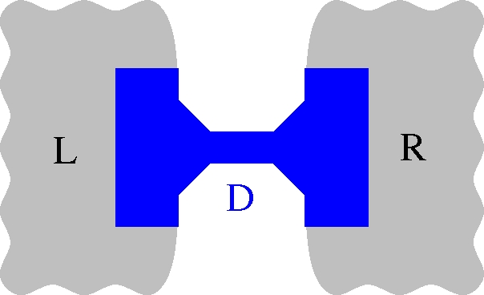
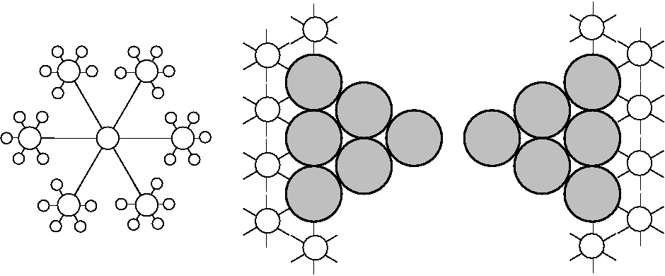

.Gaussian
ANT.Gaussian (version 2.8.4) interfaces with the quantum chemistry code GAUSSIAN03/09 to compute the electronic structure and transport of nanoscale devices with open boundary conditions, in equilibrium and out of equilibrium (zero and finite bias voltage). It follows an onion-shell scheme: the central scattering region and part of the electrodes are computed at the density functional theory level, as implemented in GAUSSIAN03/09, while the far electrodes are described by model self-energies.


How a calculation proceeds:
- GAUSSIAN starts its usual SCF for the cluster. When its density convergence reaches SL, ANT connects the electrodes and takes over the density matrix in every following cycle.
- In each cycle ANT finds the device Fermi level that gives the right number of electrons, integrates the Green's function to build the density matrix, and mixes it with previous cycles (ALPHA, NPULAY, or Fock-matrix mixing with FMIXING).
- After convergence, ANT evaluates transmission, densities of states and population analyses on a real energy grid (EW1/EW2, ESTEP).
- The converged density matrix is saved as P.job_name.dat and is read automatically to restart a calculation, for example to ramp the bias or to start a new spin configuration (PFIX, NFIX).
Electrode models (TYPE1/TYPE2):
- BETHE: a parametrized Bethe lattice attached to the outer electrode atoms, with tight-binding parameter sets for many elements in BLDAT (BLPAR1/BLPAR2, NEMBED1/NEMBED2, GLUE).
- 1DLEAD: periodic one-dimensional leads built from the Hamiltonian and overlap of repeated units in the cluster itself (NATPC1/NATPC2). Their Fermi levels come from periodic band filling and their self-energies from an iterative Dyson solution (SELFACC, L1DALPHA).
- GHOST: no electrode on that side; two GHOST electrodes give an isolated cluster treated with ANT's own convergence controls.
Basic functionality:
- Spin-resolved transmission T(E) in equilibrium or at finite bias, at zero temperature (T.job_name.dat, or T.job_name.SOC.dat with spin-orbit coupling or spin rotation).
- Eigenchannel decomposition of the transmission (NCHANNELS, HTRANSM) and reduced transmission matrix between selected atoms (t.job_name.dat, RTM_BEG/RTM_END).
- Total density of states and DOS projected on selected atoms and orbitals (DOS.job_name.dat, LDOS, LDOS_BEG/LDOS_END, DOSENERGY), and bulk DOS of the electrodes (Lead1DOS.dat, Lead2DOS.dat, LEADDOS).
- Mulliken charge and spin population analysis (Q.job_name.dat, MULLIKEN) and average on-site energies of the atoms (V.job_name.dat, keyword HAMILTON), useful to follow the potential drop at finite bias.
- Finite bias voltage with a self-consistent non-equilibrium density (BIASVOLT) and gating through an excess charge (QEXCESS).
Numerical methods:
- Density matrix from a complex-contour integration of the Green's function, plus a real-axis integration over the bias window at finite bias. The default Gauss-Chebyshev quadrature is controlled by PACC and a maximum number of points; the experimental adaptive Gauss-Kronrod quadrature (ADAPTQUAD) checks every density-matrix element.
- Integration bounds EMin/EMax are verified by a spectral-weight check whose tolerance follows CHARGEACC.
- Device Fermi search by Muller, secant and bisection, or by safeguarded Brent with an enforced charge residual (DEVMULLER/DEVBRENT, FERMIACC, CHARGEACC). An upper bound on the Fermi energy (EFMAX) and a diagnostic scan of the charge around a rejected root (QSCAN) are available. Bethe-lattice Fermi levels use Brent by default (BLBRENT/BLSECANT).
- ETA broadens every device state, including states that do not couple to the electrodes, so that such levels can be partially occupied.
- Tolerances are relaxed in early SCF cycles and tightened as the calculation converges, unless FULLACC keeps them at their input values from the start.
- OpenMP parallelization of the energy integrations (set %NProcShared and OMP_NUM_THREADS to the same value).
- Progress messages in the log mark each stage, for example the start of every density-matrix integration and Fermi search.
Advanced features:
- Spin manipulation directives to build self-consistent solutions with tailored spin textures: reversing the magnetization from a given atom (MRSTART), editing or deleting atomic spins (SPINEDIT, SPINDEL), magnetic boundary conditions of the electrodes (UD/DU/DD), fixed electron numbers (NALPHA/NBETA) and spin locking during the first cycles (NSPINLOCK, SWOFFSPL).
- Spin-orbit coupling after self-consistency (SOC) or within the SCF cycle (SCFSOC), with scaling factors and values per shell and per atom (SOC_FAC_P/D/F, SOCFACATOM, SOC_VAL_P/D/F, SOCVALATOM).
- Rotation of the spin quantization axis (keyword ROT) and Zeeman fields applied to the whole device or to selected atoms (keyword ZM).
- Correlation effects: DFT+U (DFT+U) and the interface to Dynamical Mean Field Theory through correlated blocks and hybridization functions (CORRBLOCKS, HYBFUNC, PORTHO, DIAGCORRBL).
Complementary codes:
- CRY2TB: extraction of Bethe lattice parameters from CRYSTAL calculations.
- ANT.1D: transport through one-dimensional systems from a pre-computed Hamiltonian, either a tight-binding model or a periodic calculation with codes such as CRYSTAL or SIESTA.
Worked examples (Al, Au, Ni, Pt and other nanocontacts, molecules and graphene) are distributed in the examples directory; see also the Manual and the Examples page.